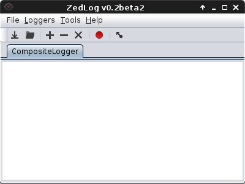
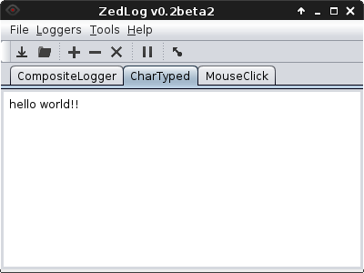
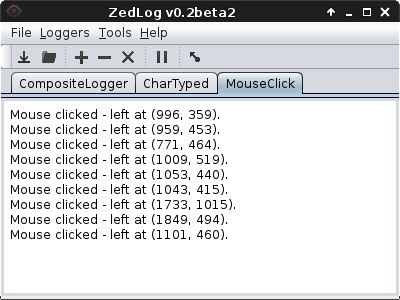
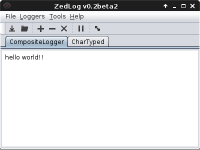
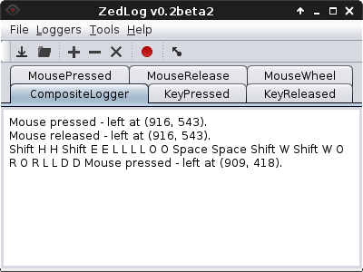

About ZedLog

ZedLog is a robust cross-platform input logging tool (AKA a key logger). It is based on a flexible data logging system which makes it easy to get the required data. The current features include the following;
- Logging all keyboard and mouse events.
- Replay simulation tool.
- Logging to file.
- Hiding in background.
License
Copyright © 2013 Zachary Scott <zscott.dev@gmail.com>
This program is free software: you can redistribute it and/or modify it under the terms of the GNU General Public License as published by the Free Software Foundation, either version 3 of the License, or (at your option) any later version.
This program is distributed in the hope that it will be useful, but WITHOUT ANY WARRANTY; without even the implied warranty of MERCHANTABILITY or FITNESS FOR A PARTICULAR PURPOSE. See the GNU General Public License for more details.
You should have received a copy of the GNU General Public License along with this program. If not, see the COPYING - GPL wiki page.
The Basics
Getting Started
When you first start ZedLog you will be presented with the following screen. This is the main screen from which all functions are available, such as adding/removing loggers.
Adding a Logger
To add a logger click the [Add] button on the screen
(or the Loggers > Add Logger menu) which will bring up
the following dialog;
Select the logger type from the drop down list and press [Okay]
to add it to ZedLog. Once you have added the logger it will automatically
start logging, like so:

Multiple loggers can be added in this way to produce a customised 'composite' logger, which compiles all log data together.
Viewing Logged Data
The logged data can be viewed on the main window. The default logger is the previously mentioned 'composite' logger, which displays all logged data. Such as below:

Each logger also has its own tab in the main window which will display the data from that logger only. Such as the following;

Clearing the Logged Data
The data currently held in the logger can be cleared by pressing the
[Clear] button on the main window (or the
Loggers > Clear menu). Like so;
NOTE: A word of warning; the data is cleared permenantly (i.e. there is no way to get it back unles you have set a log file) and ZedLog will not ask you if thats what you want. It will just unmercifuly delete all your data!
Removing a Logger
An unwanted logger can be removed simply by selecting the loggers
tab and pressing the remove button (or the Loggers > Remove Logger
in the menu).
Pausing
The logging can be paused, so that events are not recorded (temporarily of course). Like so;

Recording can be resumed by pressing the [Record]
button (the same button), like so;
Saving Logs
Saving a Log to File
The logged data can be saved to a file in two ways. Firstly the
currently logged data can be saved by selecting File > Save
in the menu and choosing the file. Like so;

NOTE: This produced file is a human readabe log file, which CANNOT be opened the same way as the log files produced via the method below.
Set Log File
The second way is to set a log file, which automatically saves the
log data. This allows for the log to be saved without explicitly
saving the file. The log file is set by selecting File > Set Log File
in the menu, like so;
Open Log File
You can also open a saved log file by selecting File > Open Log File
in the menu, like so;

Advanced
Hiding ZedLog
ZedLog has a handy feature which allows you to 'hide' it while still
logging. This can be done by pressing the [Hide] button
main window.

To bring the ZedLog window back you have to middle click (that is the mouse wheel) in the far upper left corner of the screen. This trick can also be used to quickly hide ZedLog aswell.
Replay Simulation Tool
ZedLog also now provides a replay simulation tool, which allows
for the logged events to be simulated. That is it will replay
the recorded actions. The replay tool can be started by selecting
Tools > Replay Events and you will be presented with the
following screen;
Clicking the [Run] button will simulate the events
as fast as possible, while the [Run Timed] will
run the simulation with the same timing as the original events.
Note that you can also stop the simulation by pressing the button again.
A Good, General Configuration
Below is an example configuration which will provide all of the necessary keyboard and mouse events to simulate a normal session. Just as a point of reference.
Keyboard/Mouse Shortcuts
| Function | Shortcut |
|---|---|
| Show Help |
F1
|
| Add Logger |
Ctrl + Plus
|
| Remove Logger |
Ctrl + Minus
|
| Save Log |
Ctrl + S
|
| Set Log File |
Ctrl + Shift + S
|
| Open Log File |
Ctrl + O
|
| Replay Simulation Tool |
Ctrl + R
|
| Show/Hide ZedLog | Middle click (mouse) in top left corner of screen. |
| Quit |
Ctrl + Q
|
Copyright © 2013, Zachary Scott <zscott.dev@gmail.com>